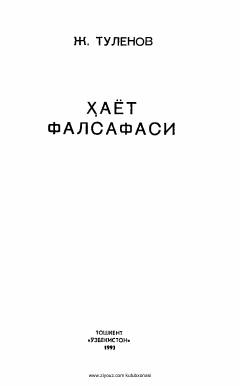

ҲФInson dunyoqarashini shakllantirishda falsafaning o'rni va uning jamiyat taraqqiyotidagi dolzarb muammolari.
Ushbu kitobda taniqli o'zbek faylasuf olimi Jo'ra Tulenovning inson dunyoqarashini shakllantirishda falsafaning o'rni, uning fan va mafkura sifatidagi xususiyatlari haqidagi ilmiy-falsafiy qarashlari bayon etilgan. Shuningdek, asarda siyosat va falsafa munosabatlari hamda jamiyat taraqqiyotining dolzarb muammolari atroflicha tahlil qilingan. Kitob oliy va o'rta maxsus o'quv yurtlari talabalari hamda falsafa bilan qiziquvchi kitobxonlarga mo'ljallangan.